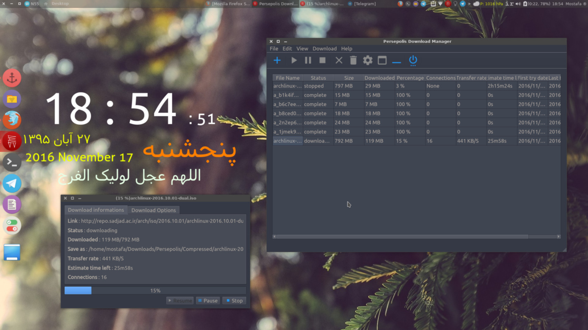
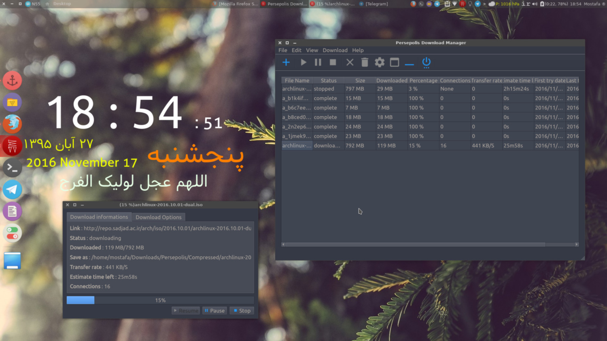
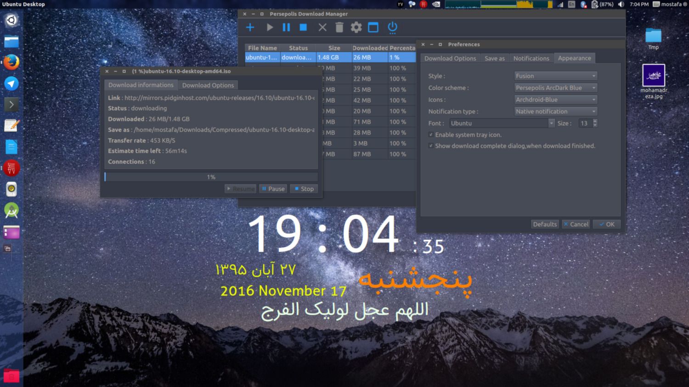
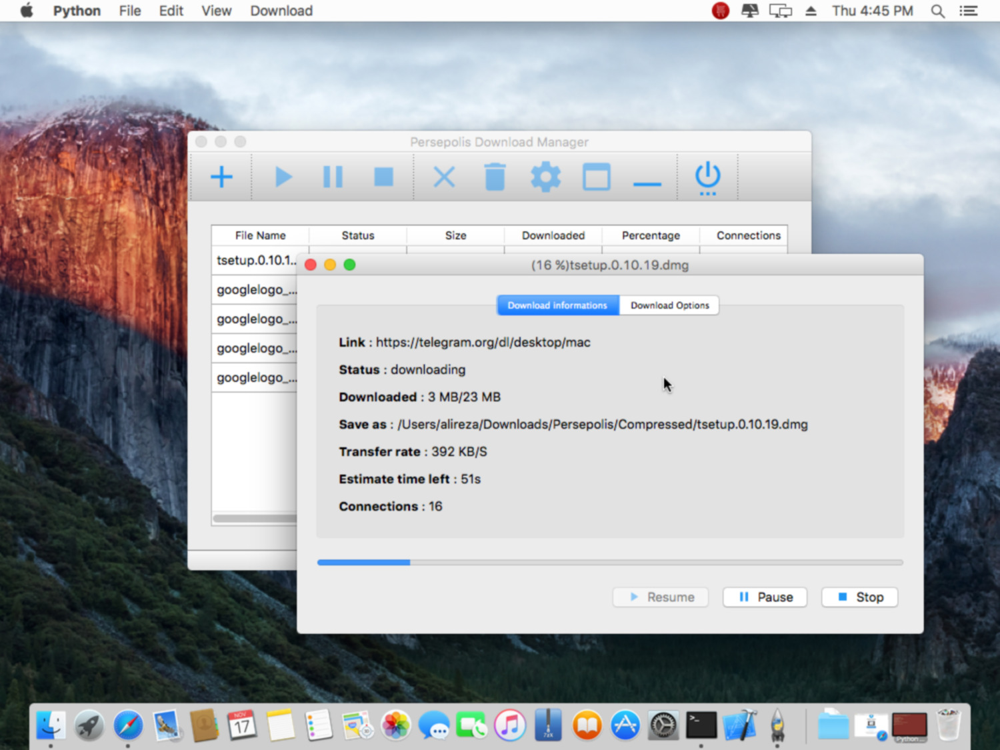
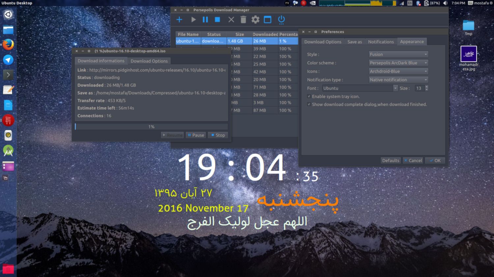
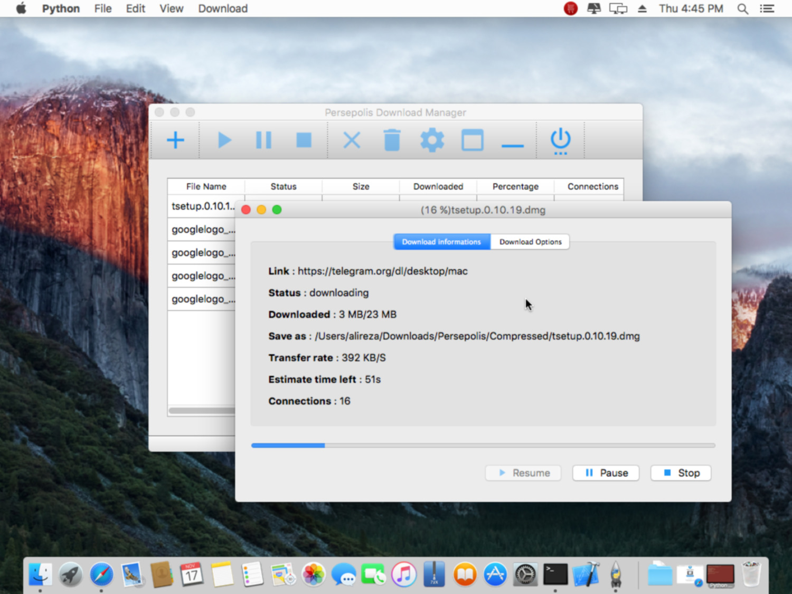

پرسپولیس چیست؟
پرسپولیس یک پوسته گرافیکی برای آریا۲ میباشد که از پایتون قدرت گرفته است,
پرسپولیس نمونه ای از نرم افزار آزاد و متن باز است که برای توزیع های گنو/لینوکسی تولید شده و در آن از PyQT5 بهره برده ایم.
شما نیز اگر از توزیع های مبتنی بر گنو/لینوکس استفاده میکنید میتوانید به جمع کاربران پرسپولیس بپیوندید و در توسعه آن ما را یاری کنید.
شیوه نصب
اوبونتو و سایر توزیعهای خانواده اوبونتو و دبیان
در اینجا شیوه نصب پرسپولیس بر روی دبیان و اوبونتو برای شما بصورت تصویری قرار داده شده است
یا بطور ساده از دستورهای زیر برای افزودن مخزن رسمی پرسپولیس و نصب آن استفاده کنید
sudo add-apt-repository ppa:persepolis/ppa
sudo apt update
sudo apt install persepolis
آرچ و توزیعهای خانواده آرچ
نصب آخرین نسخه منتشر شده (پیشنهاد شده) :
yaourt -S persepolis
نصب آخرین تغییرات از گیت :
yaourt -S persepolis-git
شما نمیتوانید هر دو نسخه را همزمان داشته باشید
فدورا
sudo dnf copr enable amirsamimi/persepolis
sudo dnf install persepolis
اوپن سوزه
این لینک را دنبال کنید
همچنین برای نصب پرسپولیس در سایر توزیعها میتوانید از این لینک
استفاده کنید
استفاده در فایرفاکس
ابتدا افزونه FlashGot را از این لینک دانلود و نصب کنید.
سپس در صفحه تنظیمات افزونه بر روی تب Prefrences کلیک کرده و در قسمت Download Manager گزینه Add را انتخاب نمایید سپس نام Persepolis Download Manager را وارد نمایید.
در قسمت Executable Path آدرس زیر را وارد کنید:
/usr/bin/persepolis
و در قسمت Command Line Argument Template متن زیر را وارد کنید:
[--link URL][--name FNAME][--referer REFERER][--headers HEADERS][--agent UA][--cookie COOKIE]

در تب Advanced گزینه Automatic Download Manager Detection را غیر فعال کنید.
همچنین در تب Flashgot Media دانلود منیجر پرسپولیس را انتخاب کنید.

در تب Downloads گزینه Automatic Downloads را غیر فعال کنید.


 

 


